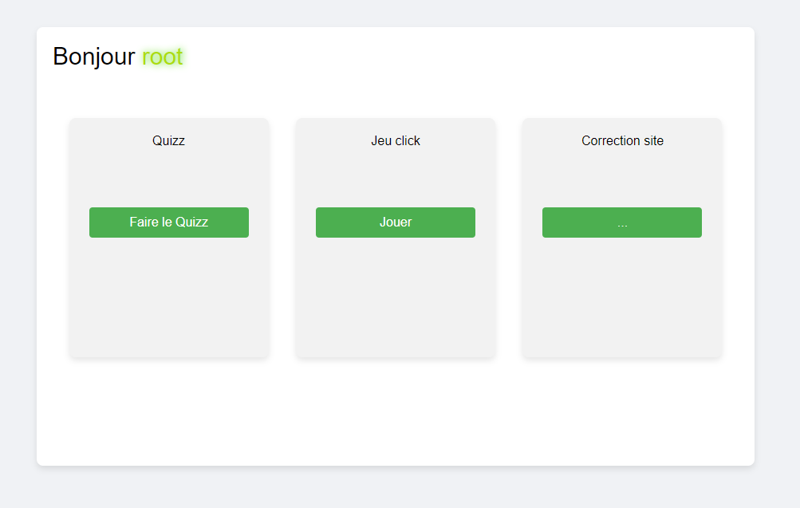
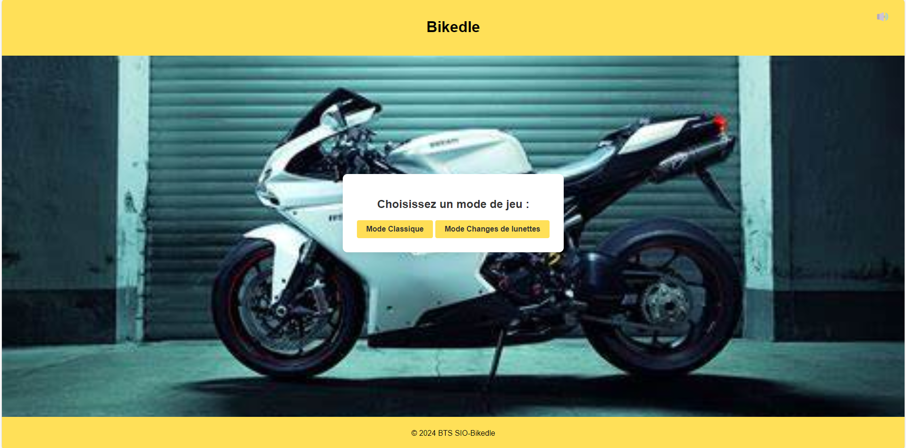
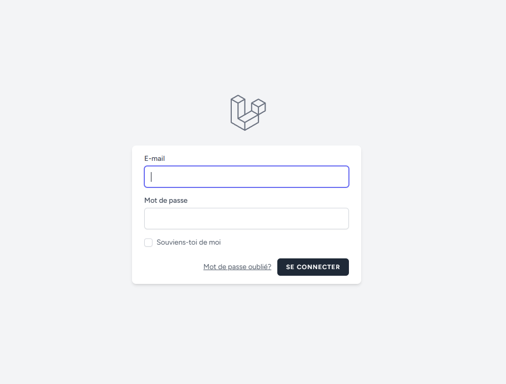
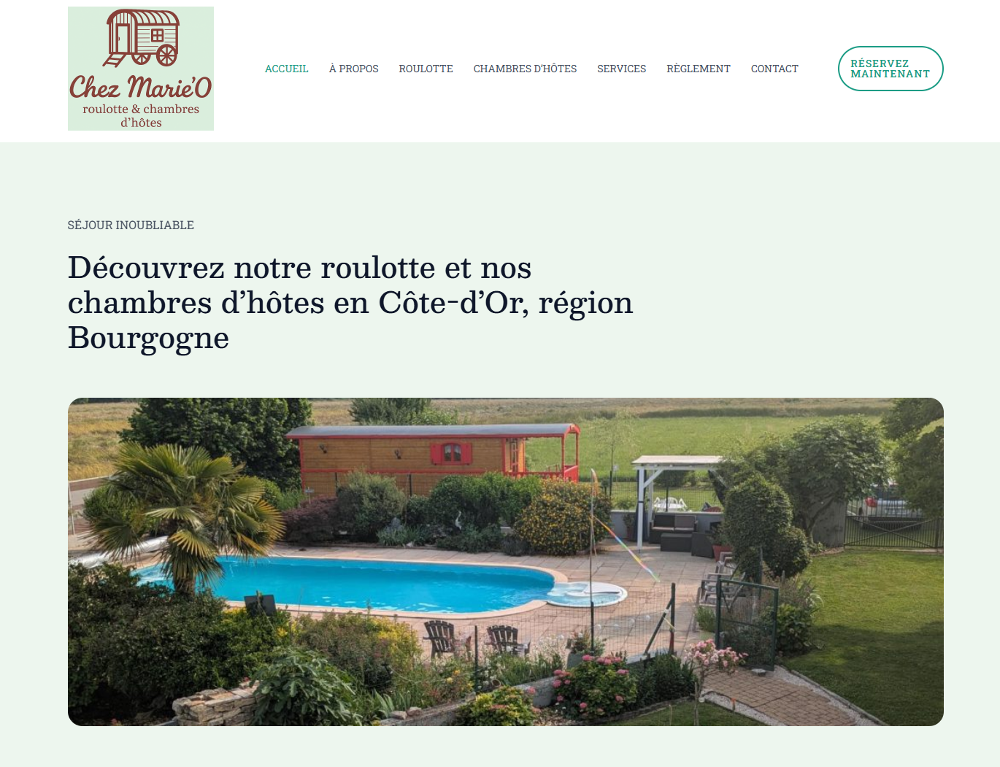

Étudiant en BTS SIO - Options SLAM
Passionné par le développement web et les systèmes informatiques
J'ai 18 ans et je suis actuellement en première année de BTS Services Informatiques aux Organisations au lycée Saint-benigne à Dijon, spécialisé en développement web et systèmes. J’ai une passion pour les technologies et je cherche à mettre mes compétences en pratique à travers des projets concrets.
Ce BTS s'adresse à ceux souhaitant se former en deux ans aux métiers d'administrateur réseau ou de développeur.
Le BTS SIO propose deux options :
Option SLAM
Option SISR
Lycée Eiffel, spécialité : Mathématiques et Numérique et Science Informatique
Passionné par les jeux vidéo, que ce soit pour le challenge ou la créativité.
Le sport m’aide à rester actif, à améliorer ma discipline et à renforcer mon esprit d’équipe.
Découvrir de nouvelles cultures et explorer le monde sont des sources constantes d'inspiration.

Développement d'un site web pour faire découvrir les métiers du numérique de manière ludique a des collégiens et lycéens.
Voir le projet
Développement d'un jeu interactif où les joueurs devinent des motos à partir d'indices visuels, avec deux modes de jeu : classique et flou progressif. Le projet intègre chrono, feedback sonore et visuel, musique d'ambiance, et un système de navigation fluide.
Voir le projet
Développement d'un site pour gérer des articles avec laravel.
Voir le projet
Création complète d’un site vitrine WordPress pour une cliente (roulotte et chambres d’hôtes). Projet réalisé durant mon premier stage (19 mai – 27 juin 2025) : conception, échanges hebdomadaires avec la cliente, déploiement sur Azure puis migration vers o2switch, optimisation SEO et gestion des plugins.
Voir le projetLa veille technologique est essentielle pour rester informé des évolutions dans le domaine de l'informatique. Voici les articles pertinents que j'ai sélectionnés et analysés depuis ma base de données dynamique.
Chargement de la veille en cours...
Si vous avez des questions, n'hésitez pas à me contacter via le mail suivant : matheomorisot6@gmail.com